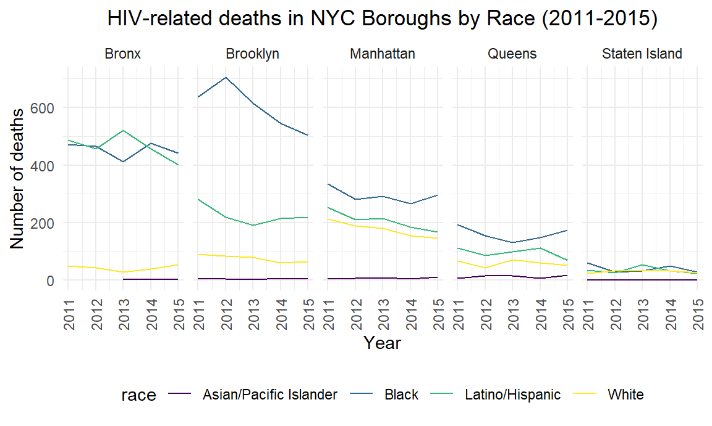
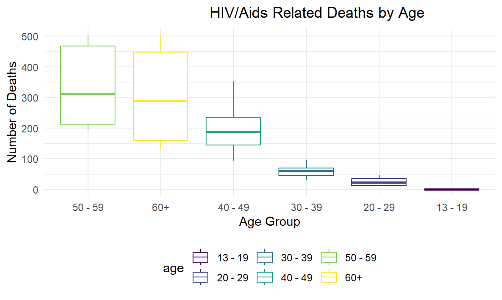
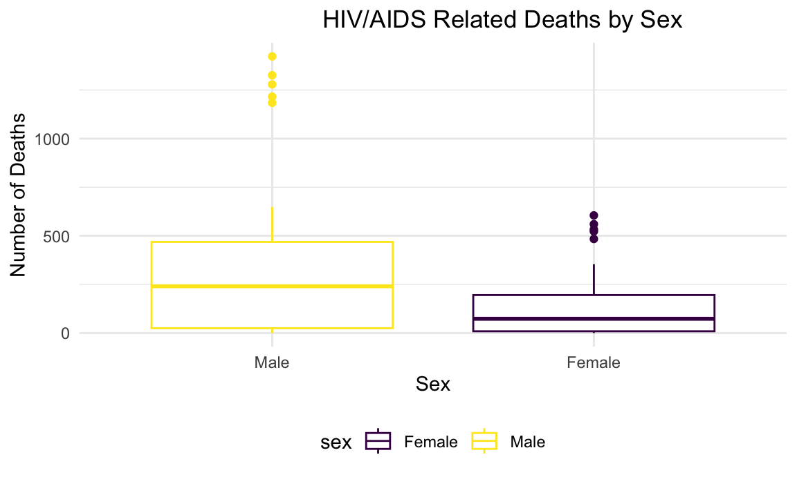
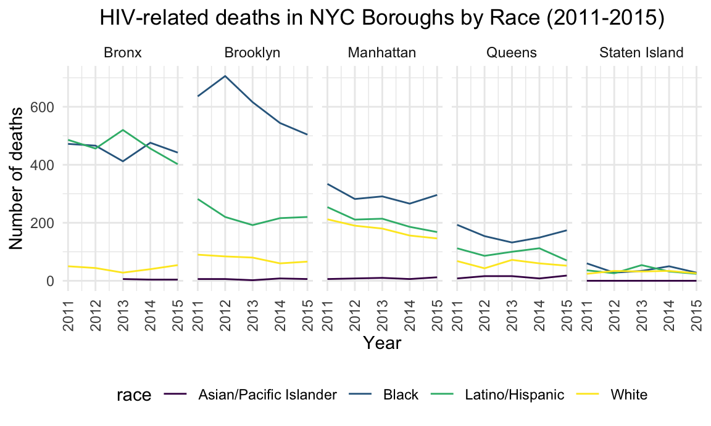

HIV/Aids Related Deaths in New York City
Visualizing HIV/Aids Number of Deaths and Death Rate by Borough, Race, and Gender
#Number of HIV-related Deaths in NYC (2011-2015)
hiv_deaths = hiv_data %>%
filter(borough == "All") %>% # Filter hiv data by borough
select(.data = ., year, deaths) %>%
group_by(year) %>%
summarise(sum_deaths = sum(deaths))
ggplot(data=hiv_deaths, aes(x=year, y= sum_deaths, group=1)) +
geom_line() +
geom_point()+
labs (title = "Number of HIV/Aids Related deaths in NYC (2011-2015)",
x = "Year",
y = "Number of deaths") +
theme(plot.title = element_text(hjust = 0.5))
#HIV-related deaths in NYC by race
hiv_data %>% # Filter hiv data by borough
filter(borough != "All") %>% # Filter hiv data by borough
filter(race != "All" & race != 'Other/Unknown') %>% # Filter hiv data by race
select(.data = ., year, deaths, race, borough) %>%
group_by(year, race, borough) %>%
summarise(sum_deaths = sum(deaths)) %>% #total number of deaths
ggplot(aes(x = year, y = sum_deaths, color = race)) +
geom_line() +
facet_grid(~borough) +
labs (title = "HIV-related deaths in NYC Boroughs by Race (2011-2015)",
x = "Year",
y = "Number of deaths") +
theme(axis.text.x = element_text(angle = 90, vjust = 0.5, hjust = 1)) +
theme(plot.title = element_text(hjust = 0.5)) 
#Number of HIV-related deaths in NYC by Sex
hiv_data %>%
filter(sex != "All") %>% # Filter hiv data by gender
filter(sex != "Transgender") %>% # Filter hiv data by gender
filter(borough != "All") %>% # Filter hiv data by borough
select(.data = ., year, deaths, sex, borough) %>%
group_by(year, sex, borough) %>%
summarise(sum_deaths = sum(deaths)) %>% #mean number of deaths
ggplot(aes(x = year, y = sum_deaths, fill = sex)) +
geom_bar(stat= "identity") +
facet_grid(~borough) +
labs(title = "HIV/Aids related deaths in NYC by Sex (2011-2015)",
x = "Year",
y = "Average Number of deaths") +
theme(axis.text.x = element_text(angle = 90, vjust = 0.5, hjust = 1)) +
theme(plot.title = element_text(hjust = 0.5)) 
#Number of Hiv-related Deaths in NYC by Age
hiv_data %>%
filter(age != "All") %>%
filter(borough == "All") %>%
select(.data = ., deaths, age) %>%
ggplot(aes(y = deaths, x = reorder(age, deaths), color = age)) +
geom_boxplot() +
theme_classic() +
labs(x = "Age Groups",
y = "Number of Deaths",
title = "HIV/Aids Related deaths in NYC by Age (2011-2015)") +
theme(plot.title = element_text(hjust = 0.7)) 
# Number of Hiv-Related Deaths in NYC by Race
hiv_data %>%
filter(race != "All" & race != "Other/Unknown") %>%
filter(borough == "All") %>%
select(.data = ., deaths, race) %>%
ggplot(aes(y = deaths, x = reorder(race, deaths), color = race)) +
geom_boxplot() +
theme_classic() +
labs(x = "Age Groups",
y = "Number of Deaths",
title = "HIV-related deaths in NYC by Race (2011-2015)") +
theme(plot.title = element_text(hjust = 0.7)) 